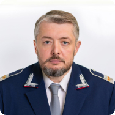

ДИРЕКЦИЯ
Это исполнительный орган Международной ассоциации "Метро" организует работу по всем направлениям деятельности Ассоциации путём привлечения к решению общих для метрополитенов проблем широкого круга специалистов. Для этой цели ежегодно формируется «План проведения конференций, семинаров, совещаний специалистов и руководителей Международной ассоциации «Метро». Планом предусматривается проведение мероприятий, тематика которых затрагивает все сферы жизнедеятельности метрополитенов, актуальные проблемы, пути их решения, вопросы внедрения достижений научно-технического прогресса, прогрессивных технологий и методик работы. Ежегодно проводится 10-12 таких конференций и совещаний.

Дирекция ассоциации

Ковалев Павел Константинович
- Генеральный директор Международной ассоциации "Метро"
- Президент Общероссийского отраслевого объединения работодателей "Ассоциация работодателей внеуличного транспорта России"
- Заместитель начальника ГУП «Московский метрополитен» по управлению персоналом
- Председатель Совета по профессиональным квалификациям городского пассажирского транспорта
Образование
- 2005 г. – Московская академия экономики и права, специальность – «Юриспруденция»
- 2009 г. – Московский государственный университет путей сообщения, специальность – «Организация перевозок и управление на транспорте»
- 2017 г. – Российская академия народного хозяйства и государственной службы при Президенте РФ, степень MBA
Профессиональный опыт
Павел Константинович начал работу в Московском метрополитене в 2003 году и прошел карьерный путь от слесаря по ремонту подвижного состава до заместителя начальника метрополитена по управлению персоналом.
С 2022 года возглавляет ОООР "Ассоциация работодателей внеуличного транспорта России" - объединение основанное для регулирования социально-трудовых и связанных с ними экономических отношений в сфере внеуличного транспорта и смежных отраслях промышленности.
С 2022 года является председателем Совета по профессиональным квалификациям городского пассажирского транспорта созданного для разработки профессиональных стандартов и квалификационных требований на федеральном уровне, проведения независимой оценки квалификации работников и соискателей, аккредитация центров оценки квалификации и определения содержания и аккредитация образовательных программ в вузах и колледжах.
- Женат, трое детей.
- +7 (495) 688-02-55
- kovalevPK@transport.mos.ru
Дирекция ассоциации
Команда Ассоциации во главе с Генеральным директором, организовывают работу по всем направлениям деятельности путём привлечения к решению общих для метрополитенов проблем широкого круга специалистов. Для этой цели ежегодно формируется «План проведения конференций, семинаров, совещаний специалистов и руководителей Международной Ассоциации «Метро». Планом предусматривается проведение мероприятий, тематика которых затрагивает все сферы жизнедеятельности метрополитенов, актуальные проблемы, пути их решения, вопросы внедрения достижений научно-технического прогресса, прогрессивных технологий и методик работы.
Совещания, семинары, встречи руководителей и специалистов проводятся в городах России и зарубежья, что способствует достижению двух целей: детальному рассмотрению актуального вопроса или проблемы с выработкой рекомендаций по их решению и ознакомлению с работой метрополитена, где, как правило, внедряется, либо внедрено достижение, обсуждаемое в ходе совещания. Такой порядок планирования и проведения деятельности Ассоциации является весьма эффективным т.к. позволяет руководителям и специалистам наиболее широко охватить весь круг обсуждаемых вопросов и ознакомиться с их решением на практике.
Основные задачи
Ассоциация ставит своей главной целью содействие и координацию деятельности ее членов в области технической политики, научно-технических разработок, реконструкции и модернизации технических средств, внедрения достижений технического прогресса в эксплуатацию путем привлечения к решению общих для метрополитенов проблем широкого круга специалистов. Основными направлениями деятельности Ассоциации являются: